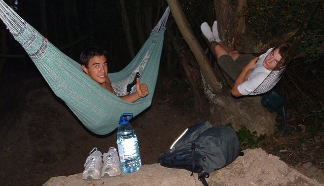
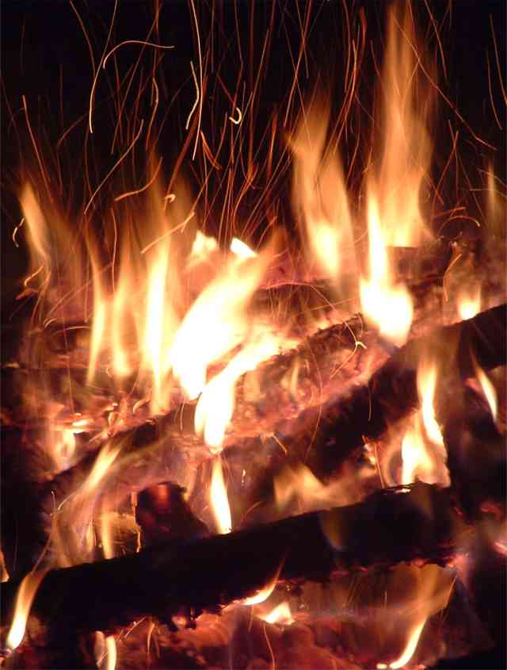
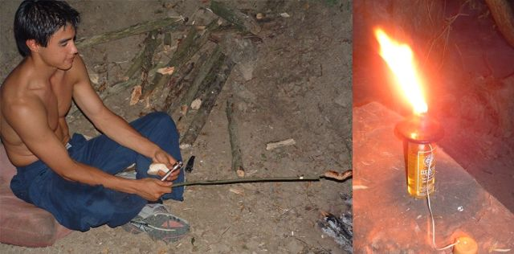
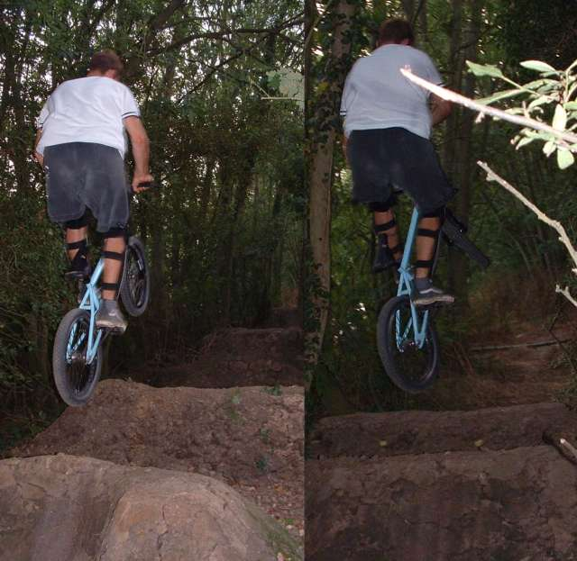
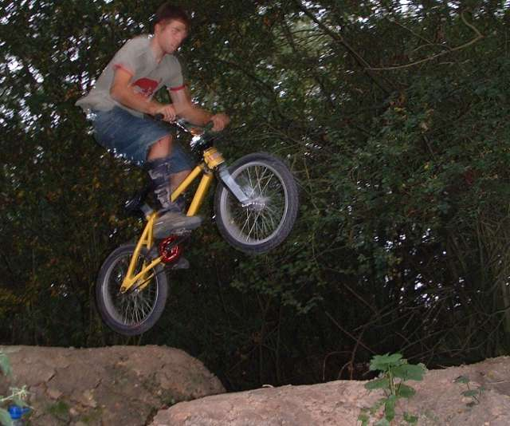

|
the pictures above are the links. wow, since i got back from my kidnapping things have been a bit
crazy. it's still hot which is great. i slept on the trampoline one
night. it was a full moon and the sky was really good. then last night
we stayed out at the trails in hammocks and had a fire and stuff.
good times.  nik in his real brazilian hammock - comfy, and tim in his rubbish army one. i fell out of my hammock so i decided to sleep on the floor.  the fire was great, although a bit hot. we cooked sausages on it. that thing is to repel the insects as well.   in the morning - nik is still asleep, and tim is making the fire good. sleeping between jumps is a lot of fun. i wonder if it will make them less scary? the mornings are weird. i was up at 6 and had done 3 hours digging by 10:30. it's been a strange old day, but i got my line running with a new run-in, so we have been riding that. some pictures below, but hopefully some more to come when it's lighter.   |